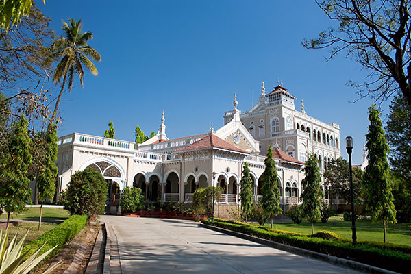
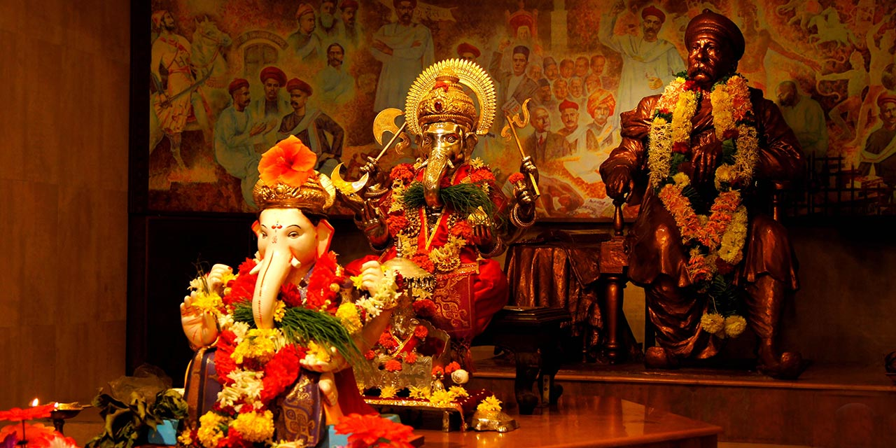

Shaniwar Wada
Shaniwar Wada is a historical fortification in the city of Pune, India.
Built in 1732, it was the great seat of the Peshwas of the Maratha Empire until 1818. Following the rise of the Maratha Empire, the palace became the center of Indian politics in the 18th century.
The fort itself was largely destroyed in 1828 by an unexplained fire, but the surviving structures are now maintained as a tourist site.
History
The Shaniwar Wada was normally the seven-story capital building of the Peshwas of the Maratha Empire. It was supposed to be made entirely of stone. However, after the completion of the base floor or the first story, the people of Satara (the national capital) complained to the Chhatrapati Shahu I (Emperor) saying that a stone monument can be sanctioned and built only by the emperor himself and not the Peshwas. Following this, an official letter was written to the Peshwas stating that the remaining building had to be made of brick and not stone.
By 1758, at least a thousand people lived in the fort.
In 1773, Narayanrao, who was the fifth and ruling Peshwa then, was murdered by guards on orders of his uncle Raghunathrao and aunt Anandibai. A popular legend has it that Narayanrao's ghost still calls for help on full moon nights. Various people, working around the area, have allegedly reported the cries of "Kaka mala vachava" (Uncle, save me) by Narayanrao Peshwa after his death.
In June 1818, the Peshwa, Bajirao II, abdicated his Gaadi (throne) to Sir John Malcolm of the British East India Company and went into political exile at Bithoor, near Kanpur in present-day Uttar Pradesh, India.
On 27 February 1828, a great fire started inside the palace complex. The conflagration raged for seven days. Only the heavy granite ramparts, strong teak gateways and deep foundations and ruins of the buildings within the fort survived.
Construction
Peshwa Baji Rao I, prime minister to Chattrapati Shahu, laid the ceremonial foundation of his own residence on Saturday, 10 January 1730. It was named Shaniwar Wada from the Marathi words Shaniwar (Saturday) and Wada (a general term for any residence complex). Teak was imported from the jungles of Junnar, stone was brought from the nearby quarries of Chinchwad, and Lime (mineral) was brought from the lime-belts of Jejuri. Shaniwarwada was completed in 1732, at a total cost of Rs. 16,110, a very large sum at that time.
The opening ceremony was performed according to religious customs, on 22 January 1732, another Saturday chosen for being a particularly auspicious day.
Later the Peshwas made several additions, including the fortification walls, with bastions and gates; court halls and other buildings; fountains and reservoirs. Currently, the perimeter fortification wall has five gateways and nine bastion towers, enclosing a garden complex with the foundations of the original buildings. It is situated near the Mula-Mutha River, in Kasba Peth.
Location: Shaniwar Peth, Pune, Maharashtra, India
View Larger Map
Sinhagad Fort
Sinhagad is an ancient hill fortress located at around 49 km southwest of the city of Pune, India.
Previously known as Kondhana, the fort had been the site of many battles, most notably the Battle of Sinhagad in 1670
It is located in the Pune district in Maharashtra. The fort is also on the famous fort in Maharashtra which has a great history of Tanaji Malusare. The fort was captured by Tanaji Malusare and his brother. Sinhagad (Lion's Fort) fort was strategically built to provide natural protection from the enemies due to its very steep slopes. The walls of the forts and bastions were constructed only at key places. There are two gates to enter the fort named Kalyan Darwaja and Pune Darwaza. The Kalyan Darwaja is towards the southeast while the Pune Darwaza is towards north east. The fort is surrounded by several other forts, and was known as the control center of the Maratha Empire. In clear weather, Rajgad, Purandar and Torna forts can be seen from the Sinhagad killa.
Location: Sinhagad Ghat Road, Thoptewadi, Pune, Maharashtra, India
History
Some of the information available about the fort, suggests that it could have been built 2000 years ago.The caves and the carvings in the Kaundinyeshwar temple stand as proofs for the same.. Also there is a Gondwana state symbol on the main gate of the fort. It has the sign of lion and elephant as well as fish. The Raj Gondian According to the Deccan sultanates era muslim historian Ferishta, Sinhagad fort was captured from Koli chieftain Nag Nayak in 1340 by the sultan of Delhi, Muhammad bin Tughluq.
The Sinhagad Fort was initially known as "Kondhana" after the sage Kaundinya. The Kaundinyeshwar temple coupled with the caves and carvings indicates that the fort had probably been built around two thousand years ago.
The fort was captured by forces of Muhammad bin Tughluq in 1328 from Koli chieftain Nag Naik after a siege of eight months. It then became part of the Bahmani sultanate followed by the Nizam Shahi of Ahmadnagar in 1485. After the fall of Nizam shahi it came under the control of the Adilshahi in early late 1500s.
Shahaji Bhosale, as the commander of Ibrahim Adil Shah II, was entrusted with the control of the Pune region. His son Chatrapati Shivaji Maharaj, refused to accept the Adilshahi and initiated the task of setting up Swarajya. Chatrapati Shivaji Maharaj gained control of Kondana in 1647 by convincing Siddi Amber, the Adilshahi Sardar who controlled the fort, that he, the son of Shahaji Bhosale, could manage the fort's defences optimally. Bapuji Mudgal Deshpande played a key role in this activity. Adil Shah jailed Siddi Amber for this treasonous act and schemed to get it back. He imprisoned Shahaji Bhosale for a concocted crime and informed Shivaji. In 1649, Adil Shah traded the fort for Shahaji's release. Chatrapati Shivaji Maharaj recaptured it in 1656 again with the help of Bapuji Mudgal Deshpande who convinced the Fort commander by giving land in the newly created Khed Shivapur village and peacefully gained control of the fort. This fort saw attacks by Mughals in 1662, 1663, and 1665. In 1664, Shaista Khan, a Mughal general, tried to bribe the people of the fort to hand it over to him but was unsuccessful.Through the Treaty of Purandar in 1665, that Chatrapati Shivaji Maharaj entered into with Mughal general Mirza Raja Jai Singh I the fort passed into the Mughal hands.
In 1670, Chatrapati Shivaji Maharaj reconquered the fort for the third time through his Koli Subedar,Tanaji Malusare in Battle of Sinhagad, and the fort came and stayed under the Maratha rule till 1689 A.D.
A steep cliff leading to the fort was scaled in the dead of the night with the help of a tamed monitor lizard named "Yashwanti", colloquially known as a Ghorpad.Thereafter, A fierce battle ensued between Tanaji and his men versus the Mughal army headed by Udaybhan Singh Rathod, a Rajput Sardar who had control of the fort. Tanaji Malusare lost his life, but his brother Suryaji took over and captured the Kondana fort, now known as Sinhagad.
There is an anecdote that upon hearing of Tanaji's death, Shivaji expressed his remorse with the words, "Gad ala, pan Sinha gela" - "The Fort is conquered, but the Lion was lost".According to some, the name Sinhagad predates this event. A bust of Tanaji Malusare was established on the fort in memory of his contribution to the battle.
After the death of Sambhaji Maharaj, the Mughals regained control of the fort. The Marathas headed by "Sardar Balkawade", recaptured it in 1693. Rajaram I took asylum in this fort during a Mogul raid on Satara. He died at the Fort on 3 March 1700 A.D. In 1703, Aurangzeb conquered the fort. In 1706, it once again went into the hands of the Maratha's. Panaji Shivdev of Sangola, Visaji Chafer, and Shankar Narayan,the Pant Sachiv played a key role in this battle.
The fort remained under Maratha's rule till the year 1817. The more than one century of the Peshwa rule saw the fort serving as a refuge from hostile forces attacking Pune, or as a place of confinement for rebels.In 1817 the East India Company, general Pritzler laid siege to the fort on the orders of Mountstuart Elphinstone, the company resident in Pune at the end of Third Anglo-Maratha War and it passed into the British hands.
Culture and Tourism
The Fort is a popular weekend destination for many residents of Pune, including trekking enthusiasts with access to the top of the fort from the base of the Sinhagad village.The trek involves a one-way walk of 2.7 km (1.6 miles) over which the walker gains about 600 m (1950 feet) in elevation.
Parts of the once extensive fortification are in ruins. The fort houses a memorial to Tanaji as well as the tomb of Rajaram I. Visitors can see the military stables, a brewery and a temple of the goddess Kali (goddess) along with a Hanuman statue to the right side of the temple, as well as the historic gates. The original commemorative memorial of Tanaji Malusare has been unearthed by the restoration workers at Sinhagad Fort in Feb 2019. The stone structure was found buried under cement, concrete, and layers of oil paint and is believed to be around 350 years old.
Sinhagad Fort has played a vital role in India's freedom struggle. Bal Gangadhar Tilak also known as 'The Father of Indian Unrest', used the fort as a summer retreat. It is here where Mahatma Gandhi after his return from South Africa had a historic meeting with Tilak. The bungalow has his bust at the entrance.
The fort also houses a television tower for broadcasting local TV signals. Currently, Non-Vegetarian food, Partying including alcoholic beverages and smoking is banned on the fort.
Pune Mahanagar Parivahan Mahamandal Limited (PMPML) runs a bus service (bus number 50) from Shaniwar Wada to the Sinhagad foothills (Sinhagad Payatha).The climbing route from either side of the fort can be covered in an hour. Shared taxi services to the base as well as the top of the fort are also available.
View Larger Map
Aga Khan Palace

The Aga Khan Palace was built by Sultan Muhammed Shah Aga Khan III in the city of Pune, India.
The palace was an act of charity by the spiritual leader of the Nizari Ismaili Muslims, who wanted to help the poor in the neighbouring areas of Pune, who were drastically hit by famine by offering them work.
The palace is closely linked to the Indian freedom movement as it served as a prison for Mahatma Gandhi, his wife Kasturba Gandhi, his secretary Mahadev Desai. Sarojini Naidu and several others were also imprisoned during the Quit India Movement that demanded an end to British rule in India.
History
Historically, the palace holds great significance. Mahatma Gandhi, his wife Kasturba Gandhi and his secretary Mahadev Desai were interned in the palace from 9 August 1942 to 6 May 1944, following the launch of Quit India Movement. Kasturba Gandhi and Mahadev Desai died during their captivity period in the palace and have their Samadhis located over there. Mahatma Gandhi and Kasturba Gandhi have their memorials located in the same complex, near Mula river.Legend goes that the Sultan built the palace to provide employment to the famine struck villagers of the surrounding region; so he employed 1000 people, and the palace was constructed in five years. It was built in Rs 12 lakhs. The total area is 7.7 hectares (19 acres) and built up palace covers 2.8 hectares (6.9 acres), and the rest is a well maintained garden.
Architecture and Museum
The Aga Khan Palace follows the Indo-Saracenic style of architecture and is complete with pediments and turrets.The area of the ground floor is 1756 m2, that of the first floor is 1080 m2, whereas the second floor has a construction of 445 m2. The speciality of this structure is its corridor of 2.5 meters around the entire building. The palace captivates the eye of a spectator with its magnificence and picturesque architecture.
The Gandhi Museum at Aga Khan Palace is spread over six galleries. The galleries exhibit several statues of Gandhi and others. There are several displays complete with charts and diagrams depicting the history of the Quit India Movement.
Location: Pune Nagar Road, Kalyani Nagar, Pune, Maharashtra, India
View Larger Map
Lal Mahal

The Lal Mahal (Red Palace) of Pune is one of the most famous monuments located in Pune, India, where Shivaji I, founder of the Maratha Empire spent his childhood.
History
In the year 1630 AD, Shivaji's Father Shahaji, established the Lal Mahal for his wife Jijabai and son.Chhatrapati Shivaji Maharaj stayed here for many years till he captured the first fort. The current Lal Mahal is a reconstruction of the original and located in the center of the Pune city. The original Lal Mahal was built with the idea of rejuvenating the recently razed city of Pune when Shahaji Raje entered the city along with Shivaji and his mother, Maasaheb Jijabai. Young Shivaji grew up here, and stayed in the Lal Mahal till he captured the Torna fort in 1645. Shivaji's marriage with his first wife, Saibai took place in Lal Mahal on 16 May 1640.
The Lal Mahal is also famous for an encounter between Shivaji and Shaista Khan where Shivaji cut off the latter's fingers when he was trying to escape from the window of the Lal Mahal. This was part of a surreptitious guerrilla attack on the massive and entrenched Mughal Army that had camped in Pune, with Shaista occupying (possibly symbolically) Shivaji's childhood home. As a punishment for the ignominy of the defeat despite superior numbers and better armed and fed soldiers, Shaista was transferred by the Mughal Emperor Aurangzeb to Bengal.
Towards the end of the 17th Century, the Lal Mahal was ruined by some people and was eventually razed to the ground as a result of various attacks on the city.It is said that during the construction of the Shaniwarwada, some soil and stones of the Lal Mahal were used for luck. In 1734-35, a few houses were constructed on the land of the Lal Mahal and given for use to Ranoji Shinde and Ramchandraji. The records in the offices of the Peshwas mention that Lal Mahal was used for arranging feasts for the Brahmins during the thread-ceremony of Sadashivrao Bhau, son of Chimaji Appa. The exact original location of the Lal Mahal is unknown, however it was known to be very close to the location of Shaniwarwada, which is roughly where the current reconstruction stands.
Reconstruction and current structure
The current Lal Mahal was built only on a part of the land of the original Lal Mahal. The new Lal Mahal was not rebuilt in the same fashion as the original one and there is not much information found about the area and structure of the original Lal Mahal. The current Lal Mahal was rebuilt by the Pune Municipal Corporation. Construction started in 1984 and was completed in 1988.
The current Lal Mahal is a memorial holding a collection of large-size oil paintings based on the significant events in the life of Shivaji, a statue of Jijabai, a carving depicting Shivaji using a gold plow along with Jijabai, a fiber model of Raigad with horsemen and a huge map of Maharashtra indicating the forts of Shivaji. The popular Jijamata Garden is now a recreational park for kids.
Location: Kasba Peth, Pune, Maharashtra, India
View Larger Map
Parvati Hill

Parvati Hill is a hillock in Pune, India. The hillock rises to 2,100 feet (640 m) above sea level. Atop the hillock is the Parvati Temple, one of the most scenic locations in Pune. The temple is the oldest heritage structure in Pune and was built during the rule of the Peshwa dynasty.For visitors, Parvati hill is also an observation point that offers a panoramic view of Pune. It is the second highest point in Pune (after Vetal Hill). The hill has 108 steps (considered a holy number in Hinduism) leading to the top of the hill where the temple is situated.The hill was owned by the Patil named Taware. Peshwa purchased the hill to build a temple of Shiva. The Devi temple was believed to be of Taware's kulswami whose angara was able to cure a leg ailment of Kashibai, mother of Peshwa Balaji Baji Rao. Thereafter, the Peshwa built a temple complex there.
The main temple, Devdeveshwara, is made of blackstone. It was completed under Balaji Baji Rao in 1749, and a gold pinnacle was added to the temple in 1760. Other temples are dedicated to Vitthal and Rukmini, Vishnu, and Kartikeya.
Temples
Parvati Hill has 5 temples atop it:
Devdeveshwar temple (Shiva and Parvati)
Kartikeya Temple
Vishnu Temple
Vitthal Temple
Rama Temple
Other structures
Besides the temple, the Peshwa Museum is situated there. The museum houses the weaponry, coins, utensils, wooden furniture, modes of transport (palanquin) and gifts acquired from the times of the Peshwas.
Location: Parvati Paytha, Pune, Maharashtra, India
View Larger Map
Lohagad Fort
History
Lohagad has a long history with several dynasties occupying it at different periods of time: Lohtamia, Chalukyas, Rashtrakutas, Yadavas, Bahamanis, Nizams, Mughals and Marathas. Chatrapati Shivaji Maharaj captured it in 1648 AD, but he was forced to surrender it to the Mughals in 1665 AD by the Treaty of Purandar. Chatrapati Shivaji Maharaj recaptured the fort in 1670 AD and used it for keeping his treasury. This fort was used to keep the winnings from Surat. Later in Peshwa time Nana Phadnavis used this fort for living for some time and built several structures in the fort such as a big tank and a step-well.
The Lohagad fort has caves on its south side facing Lohgadwadi. In September 2019 an inscription in Jain Brahmi script in Prakrit language dating back to the 2nd or 1st century BC was discovered by team of trekkers from Pune in the cave on the cliff. The inscription was studied by Dr. Shreekant Pradhan, an ancient Indian paintings scholar working at Deccan College Post Graduate and Research Institute.[1]
The inscription was found on the outside wall of a rock-cut cave on the eastern side cliff of the Lohgad fort, close to Lohgadwadi village. The inscription is written in the Brahmi script and the language is Prakrit influenced Sanskrit.
The inscription is similar to, but more descriptive than, an inscription discovered at Pale caves (Maval) by Mr. R.L.Bhide and studied by archaeologists HD Sankalia and Shobhana Gokhale in 1969. It starts with ‘Namo Arihantanam’ which is commonly used by Jains in Navakar Mantra, pointing to the fact that the Lohgad cave is a Jain rock-cut cave. The inscription at Pale caves also begins in a similar manner and based on Sankalia and Gokhale’s study, it was assumed to be a Jain inscription.
The inscription mentions the name "Ida Rakhita", meaning Indra Rakshita, who donated water cisterns, rock-cut benches to settlements in the area. The inscription at Pale also mentions the same name. The newly discovered inscription is 50c m-wide and 40cm-long and is written in six lines.The Lohagad Jain cave is near the fort.
The fort has been declared as a protected monument by the government.
Accessibility
Lohagad fort can be accessed by various modes of travel. The nearest airport is the Pune International Airport. The proposed Navi Mumbai International Airport will serve as the nearest airport in the coming future.
The nearest train station is Malavli, which can be accessed by suburban trains between Lonavala and Pune. The nearest major train station is Lonavala, on the Mumbai-Pune railway line. Lohagad is connected by the Mumbai-Pune Highway and can also be accessed from Paud via Kolvan and Dudhiware Khind for all vehicles.
People can also hike all the way to the fort. Bhaja Caves is on the way to Lohagad if a small diversion is taken. This walk is a particular favorite of trekkers, especially in the monsoon season. It is a simple, very scenic and pleasant trek and the distance from Malavli and Lohagad can be covered in around two hours. A tar road exists all the way to the top from Malavli station and one can hire a tempo or cab to the top. The best season to visit the fort is in the monsoons.
A variety of birds and insects can also be spotted in these hills.
Location: Lohagad, Pune, Maharashtra, India
View Larger Map
Pataleshwar Cave Temple

History
The Pataleshwar Caves, also referred to as the Panchaleshvara temple or Bhamburde Pandav cave temple, are an 8th-century rock-cut Hindu temple from the Rashtrakuta period located in Pune, Maharashtra, India. Dedicated to Shiva, it was a monumental monolithic excavation with a notable circular Nandi mandapa and a large pillared mandapa. It is a temple of three rock-cut cave sanctums, likely dedicated to Brahma-Shiva-Vishnu originally, but currently to Parvati-original Shiva-Ganesha. A garden now surrounds the site, new idols have been placed elsewhere in the complex. The interior of the caves have suffered damage from vandalism. Outside, the monument shows the effects of natural elements over the centuries.The Pataleshwar temple is a protected monument of India and managed by the Archaeological Survey of India.
Location
The Pataleshwar Caves are in the northern side of Pune, on a rocky hill immediately west of the sangam (confluence) of the Mula and Mutha rivers – sites recommended for temples in historic Sanskrit texts on temple architecture. Surveys of this site done in the 19th-century refer to it as the "Panchaleshvara cave", "Bhamburde caves of Pune", "Pandoo caves", or "Panchaleshvara temple"; they mention it to be situated in a village north of Pune. However, as the Pune city has grown, this site is now a part of Shivajinagar (Pune), surrounded by urban structures. The Pataleshwar caves are about 150 kilometres (93 mi) from Mumbai.
Architecture
The Pataleshwar caves are a monolithic excavation of a rocky hillock that gently swells and forms the terrain here. Its entrance is about a 20 feet long path from the east of the complex. It was originally an excavated tunnel but one that collapsed. It was, for a period, restored with a masonry. The path leads into an open court that is nearly a square (95 feet at its maximum in north–south, by 90 feet across east–west).
The floor of this open mandapa was cut into the basaltic rock, part of the vast Deccan Traps. It features a circular shape Nandi mandapa, all cut out of the original rock to monolithically reveal the Nandi shrine and the Nandi. This mandapa had sixteen pillars, twelve along the circumference and four inside to support the roof of the Nandi mandapa. However, four of the eastern pillars and the roof above they supported is now lost.he shilpins (artists) cut the floor around the Nandi mandapa to provide for an annular cistern about 2 feet deep, one that likely held any liquids used to wash or ceremonially rinse the Nandi. The Nandi sits on a pedestal, also monolithically carved out of the natural rock.
The covered part of the Pataleshwar site is a large nearly square mandapa, a bit smaller in size than the open court with the Nandi mandapa. The facade consists of eight pillars and two pilasters.There are five rows of these pillars, with an eight feet aisle, while the cave walls have pilasters, all monolithically excavated from single rock. The sanctums open to the east, and have a pradakshinapatha carved out (circumambulation passage) around the three sanctums.A notable feature of the sanctums area of this complex is that it is at a lower level, cut deeper into the ground. It is this "underworld" symbolism that gives this site its name – Pataleshwar (many temples in India with deep-in-the ground sanctums are also called Pataleshwar).
A set of steps, flanked with two couchant stone tigers carved in-situ, provide entry into the covered mandapa. Between the third row and the fourth row of pillars, in the front of the sanctums, is another small Nandi hewn in-situ, thus re-affirming that this was a Hindu Shaivism site from its origins. The three sanctum caves total to about 39 feet long and 27.5 feet deep. The central shrine has a rock-cut Mahadeva Panchalesvara linga (original), while the cella on its side have space for statues.The original statues are lost, and were likely of Brahma on one side, Vishnu on the other.Sometime before the mid-19th century, these were reclaimed with the addition of a Parvati statue and a Ganesha statue.
The caves have remains and traces of reliefs, most of which is now lost. Of what can be identified, include Saptamatrikas (Shaktism), Gajalakshmi, Tripurantaka, Anantasayin (Vaishnavism) and Lingodbhava.The complex includes a small side shrine for Durga.
Location: Jangali Maharaj Road, Shivajinagar, Pune, Maharashtra, India
View Larger Map
Dehu Gatha Temple
Dehu is a neighbourhood in the city of Pune, India. It is known for being the abode of Sant Tukaram.
The Tukaram Palakhi heading towards the town of Pandharpur originates from Dehu in the month of Ashadh.
Sant Tukaram
Sant Tukaram lived in Dehu. His temple is located on the banks of the Indrayani river.[3][4][5] This temple was constructed by his younger son Narayanbaba in 1723. A rock (pashan,samadhi) where Saint Tukaram was on fast is also here.
Important Places associated with Tukaram in Dehu are:
1. Tukaram Maharaj Janm Sthan Temple, Dehu – place where Tukaramji was born, around which a temple was built later
2.Saint Tukaram Vaikunthstan Temple, Dehu – from where Tukaramji ascended to Vaikunth in his mortal form; there is a nice ghat behind this temple along the Indrayani river
3.Saint Tukaram Maharaj Gatha Mandir, Dehu – modern structure; massive building housing a big statue of Tukaram; In the Gatha temple, about 4,000 abhangs (verses) created by Tukaram maharaj were carved on the walls.
Indrayani River
Indrayani river flows through Dehu which later flows through Alandi. The place where Lord Vitthal gave blessings to Saint Tukaram, which is now the main temple in Dehu consisting of 'Swayambhu' (self-existing) idols of Lord Vitthal and goddess Rakhumai is situated on the banks of river Indrayani. The region of Dehu is known as a 'Sri Kshetra' as it holds the self existing idols of Lord Vishnu and Lakshmi in the form of Vitthal and Rukhmini respectively.
Location: Dehu, Pune, Maharashtra, India
View Larger Map
Vishrambaug Wada

History
Vishrambaug Wada was built in 1807 AD at the price of Rs 200,000. It took six years to complete the construction. Baji Rao II preferred this residence to the ill-fated Shaniwar Wada, the citadel of the Peshwas. Baji Rao II stayed here for eleven years until his defeat in the Third Anglo-Maratha War. After the war the British exiled him with a pension to Bithur near Kanpur. His wife, Varanasibai, continued to stay here for a while before joining him in Bithur. Soon the British took over Pune.
In 1821, the new East India Company rulers of Pune started the Hindoo college in the Wada to continue Sanskrit learning in the city. The college was the forerunner of the Poona college which later became Deccan College. A high school called Vishrambag High School also operated out of the palace. In 1871, an act of arson entirely destroyed the eastern wing of the wada.
In 1930, the then Poona municipality bought the property from the colonial Bombay Presidency government for a sum of Rs 100,000. Until 1959, Municipality and its successor, the Pune Municipal Corporation(PMC) operated out of Vishrambaag Wada. Several PMC department offices were based in the wada until 2003.
Restoration
The PMC has undertaken the restoration work of Vishrambaag Wada under the Heritage Corridor Plan. The conservation is set to be carried out in three phases, starting with the double storeyed mansion where the Peshwa is said to have lived with a battery of 6,000 servants.
According to PMC’s heritage cell chief Shyam Dhavale, the original bricks wada, are specially being recreated. And so are some of the windows, wooden pillars and motifs.
Red tiles on the sloping roof and the courtyard—a typical feature of Maratha architecture—will be retained.
As of 2004, ₹2,500,000 (US$31,000) have been spent on the restoration work.
Location: Sadashiv Peth, Pune, Maharashtra, India
View Larger Map
Nana Wada
Balaji Janardhan Bhanu aka Nana Fadnavis built for himself in 1780 A.D. the palace built at the rear of Shaniwar Wada is called Nana Wada . The architecture is a fusion of Peshwa and British architecture.
History
Class of Deccan Education Society's New English School in April AD. 1882 to December AD. During the year 1953, Bharat was in Nanawada. In 1907, a school building named New English School was built in the back part of this palace during the British period.
Architecture
The beautiful architecture of the mansion has stood the test of time. It is primarily made of sagwan wood/teak and is an example of architecture from the Peshwa era. The elaborate woodwork consists of wooden railings, a timber ceiling, arches, motifs of banana flowers, cypress-shaped pillars, and more.
Location: Nana Peth, Pune, Maharashtra, India
View Larger Map
Chatushrungi Mata Temple

The Chattushringi Temple also spelt as Chattushrungi Temple is a Hindu temple in the city of Pune in Maharashtra state of India. The temple is located on the slope of a hill on Senapati Bapat Road.It is said to have been built during the reign of the Maratha king Shivaji. The temple is looked after by Chattushringi Devasthan (Temple) trustees.
Chattushringi (Chattu means four) is a mountain with four peaks. The Chattushringi temple is 90 feet (27 m) high and 125 feet (38 m) wide and is a symbol of power and faith. One has to climb more than 200 steps to reach the shrine of Goddess Chattushringi. In the temple premises there are also temples of Goddess Durga and Lord Ganesh. This includes eight miniature idols of Ashtavinayaka. These small temples are located on the four separate hillocks.
Legend
The legend associated with the temple is that, once there was a rich and prosperous merchant named Durlabhsheth Pitambardas Mahajan who was an ardent believer of Goddess Saptashrungi Devi and visited Vani every now and then. But as he grew older, he could no longer travel and this hindered him from visiting the temple and it bought him sorrow in his heart, he prayed Saptashrungi Devi with tears and then one night the Goddess Saptashrungi Devi appeared in his dream and told him, "if you can not come to me, I will come to you & stay near you." She told him to come to a mountain situated in the North-West of Pune & dig there. The place as described by the goddess was traced out and a miracle happened as he found a natural statue of the goddess (swayambhu devi). He constructed the temple at that place and this is the same temple which was renovated from time to time, which is the present temple.
Deity
The presiding deity of the temple is Goddess Chattushringi, also known as Goddess Ambareshwari. She is also considered as the presiding deity of the city of Pune. The temple is maintained by the Chattushringi Devasthan Trust. Every year a fair is held at the foothills on the eve of Navratri. Thousands of people gather to worship the Goddess Chattushringi.
Location: Senapati Bapat Road, Pune, Maharashtra, India
View Larger Map
Shinde Chhatri
Shinde Chhatri at Wanawadi in Pune, India is a memorial dedicated to the 18th century Maratha military leader Mahadji Shinde who served as the commander-in-chief of the Maratha army under the Peshwas from 1760 to 1780. It is one of the most significant landmarks in the city and is reminiscent of the Maratha rule. It is a hall that marks the spot of Mahadji Shinde's cremation on 12 February 1794.
In 1794, the complex of the memorial only had a temple, dedicated to Lord Shiva, which was built by Mahadji Shinde himself. He died the same year and his last rites were performed in the premises. The memorial to Mahadji was commissioned by one of his descendants.
In 1910, a samadhi (memorial) was constructed outside the sanctum of the Shiva temple, in memory of Mahadji Shinde, exactly where he was cremated. Maharaja Madho Rao Scindia of Gwalior (1876 – 1925) commissioned the building of the complex, along with the memorial of Mahadji Shinde.The Architects of the monument were the firm of Shapurjee N. Chandabhoy of Bombay.
Architecture
The major attraction of the Shinde Chhatri of Pune is its exquisite architecture, reflecting the style used in Rajasthan, India. The architectural grandeur of the building is appreciable with beautiful carvings and the building is the lively specimen of a structure constructed following the Vastu shastra rules.The memorial retains its architectural design and beauty till date.
The fine carvings and idols of saints on the steeple of the Shiva temple are made of yellow stone and the base and the sanctum sanctorum are constructed in black stone. The Chhatri (hall) not only has carvings and painting, but also houses a gallery in it. Coloured window-panes used for the windows are of English style. The hall is beautifully adorned with paintings and photographs of members of Shinde family.
Renovations
Unfortunately, this memorial was overlooked for several years and was in a bad condition. The structure had gathered moss on the hall, due to the seepage of rain water. Rain and moisture had damaged the upper storey of the building, constructed in yellow stone, which had acquired a grayish look. The roof was also damaged, allowing the rain water to seep into the hall, damaging the carvings.
The beautiful structure is now getting restored to its original looks. The moss from the delicate and porous yellow stones was cleaned using pressure machines.
The building's supporting terrace is completely restored now. A water repellent roof was reconstructed to ensure that water does not seep inside, in future.
The first phase of the restoration is over.
In second phase, it has been planned to replace the old English styled window panes, with newer ones. Second phase will resume after the monsoon season.
Location: Wanawadi, Pune, Maharashtra, India
View Larger Map
Mahatma Phule Museum

Mahatma Phule Museum is a museum located in Pune, a city in the Indian state of Maharashtra. It was founded in 1890 and was then called the Poona Industrial Museum, and subsequently it was named Lord Reay Museum. In 1968 it was renamed as Mahatma Phule Museum.
Sections
The museum contains sections that contain some pictures, charts, models and machines and science models. The displays are related to industry and engineering, geology and minerals, handicrafts and cottage industries, agriculture, forestry, natural history and armoury. The armoury has weapons of the Mughal and Maratha period. There are charts that detail various forts in Pune district. The natural history section has a taxidermy collection of various species of animals, birds, insects, snakes and fishes. The industrial section has models of Indian hydro-electric and irrigation projects and oil refining methods that explain scientific agriculture.
Museum
The museum has housed a library since its inception. It contains books that cover a variety of subjects, especially those on ancient technologies and museology.
Location: Ghole Road, Shivajinagar, Pune, Maharashtra, India
View Larger Map
Kelkar Museum
The Raja Dinkar Kelkar Museum is in Pune, Maharashtra, India. It contains the collection of Dr. Dinkar G. Kelkar (1896–1990), dedicated to the memory of his only son, Raja. The three-storey building houses various sculptures dating back to the 14th century. There are also ornaments made of ivory, silver and gold, musical instruments (a particularly fine collection), war weapons and vessels.
History
The collection was started around 1920, and by 1960 it contained around 15,000 objects. The museum was established in 1962, and Dr. Kelkar donated his collection to the Government of Maharashtra in 1975.
The museum now holds over 20,000 objects of which 2,500 are kept on display. These consist of mainly Indian decorative items from everyday life and other art objects, mostly from the 18th and 19th centuries. The museum's collection depicts the skills of the Indian artists of the time, including the prominent works of Pandit Abhijeet Joshi.During the COVID-19 pandemic in India, the museum offered a virtual tour.
Location: Natu Baug, Shukrawar Peth, Pune, Maharashtra, India
View Larger Map
Taljai

Taljai is a hill located in the heart of Pune, India that has been designated as a wildlife reserve. The road to this hill passes through the Shivaji Maratha College campus with a picturesque mountain path, with sharp turns. Near the entrance of the forest is a temple to the hill's namesake Taljai mata; a Hindu goddess.
The reserve attracts migratory birds and is home to peacocks. The location is therefore popular with amateur bird watchers and ornithologists.A recent study concluded that the lake at Taljai is dying due to dumping of plastic waste. facing issues to maintain its original form due to urbanization. Several organisations are running campaigns to raise the issue. The park is open for visitors from 5 to 10 in the mornings and from 4:30 to 7:00 in the evenings. Vehicles are prohibited in the area.
Location: Sahakar Nagar, Pune, Maharashtra, India
View Larger Map
Kasba Ganapati
History
The temple was commissioned by Jijausaheb, after Dadoji Konddeo reported to her that a murti of Ganpati had been found in Pune. The murti's status as the premier murti in Pune was decided by Bal Gangadhar Tilak.
In the year 1630, the Maratha Aristocrat and wife of Sardar Shahaji Bhosale, Jijaubaisaheb Bhosale arrived in Pune with her then infant son, Chhatrapati Shivaji maharaj, the founder of Maratha Empire. Around this time, along with other seven families, the Thakar Family migrated to Pune from the village of Indi, Bijapur district in present-day state of Karnataka. Shri Vinayak Bhatt Thakar also carried his Family deity, Lord Gajanan along with him. All these families settled near River bank around the current place of Kasba Ganapati Temple which was close to the residence of Jijabai. Jijabai perceived this as an auspicious moment and promptly decided to build a temple, which is popularly known as the Kasba Ganpati Mandir.
Since then, Pune is also known as the city of Ganesh. The Peshwas were ardent followers of Lord Ganesh. During their regime Shaniwarwada witnessed grand celebrations for Lord Ganesh.
In 1893, Bal Gangadhar Tilak, the Indian Nationalist Leader, initiated the now famous Ganesh Festival. His intention was to gather people sharing similar ideas and exchange thoughts to deal with the British ruler. He started celebrating Ganesh Festival from his own house called Kesari Wada. Due to his personal popularity and initiative, Ganesh Festival became a public festival soon afterwards.
There was rivalry among the various mandals regarding the privilege of immersing the murti first on the last day of the Ganpati festival. Bal Gangadhar Tilak resolved the rivalry and declared the privilege of first immersion to Shri Kasba Ganpati, as it is the local deity of Pune.
Location: Kasba Peth, Pune, Maharashtra, India
View Larger Map
Tambdi Jogeshwari
Tambdi Jogeshwari temple is supposed to be the oldest one in Pune which was formed around the swayambhu idol by , Trimbak Bendre in 1545 A.D. Original temple was small one and surrounded by farms . being the Gram Devata the temple was situated at the border of village Pune.(It was there where it is Today.)
Later in 1636 when Shivaji Maharaj came to Pune to stay , with his mother Jijabai and his mentor Dadoji Konddev, sought the blessings of devi and ploughed the land in front of mandir with Golden plough , signifying the new beginning for Pune. It is believed that a Deepmal was erected where the ploughing was started and one where the ploughing was ended. That time the temple was surrounded by fields and small water current was flowing near the temple was called as Ambil Odha.
In the era of Peshwas, who were the administarators of the Maratha Kingdom, the Pune started developing as a city. Considering the developments around the old temple , the larger area of land was alloted for the temple and the Today's temple was constructed in 1705. (There is a such a note in Peshawa Daptar , rumal no- 165) There are number of notes in history which tells that, the Peshwas were used to seek blessings of Devi for their every new missions.The wives of Peshawas were regular devotees of the Devi. On the Day of Dassera , the Peshwas and their sardars like Holkar, Shitole, Devaskar were used to perform Pooja and then there used to be a miravnook(procession) of Devi in palakhi. The tradition of Devi's Daserra miravnook still exists Today.
During the British Rule in 1930-34 the Prabhat Pheris began form the temple. The Swadeshi movement also witnessed the burning of foreign clothes and goods with th blessings of Devi.
Bhau Bendre established this Ganesha Mandal in 1883. Goddess Tambadi Jogeshwari is considered as the village deity of Pune. As this is Ganesha in her area, he is known by the name of Devi. Devotees visit Tambadi Jogeshwari Devi during Sharadiya Navratri festival. Both this goddess and Ganapati here are places of worship for devotees.
Tambadi Jogeshwari Public Ganeshotsav Mandal is a public Ganeshotsav Mandal in Pune . Along with four other mandals, this mandal has a place of honor in the Ganesh Visarjan procession in Pune .
View Larger Map
Guruji Talim Ganapati
It is given the third place of honor in the history of Pune city as it is Ganapati who encouraged Hindu and Muslim unity. It is a Ganeshotsav started by members of the wrestling arena. This is believed to be Ganesha before Lokmanya Tilak started the public Ganeshotsav. In 1887 Bhiku Shinde, Sheikh Kasam Vallad, Nanasaheb Bhriwale started this festival.
The original clay idol of Shadu in the shape of a mouse was made in 1972. The statue was built on the initiative of the then corporator Shyam Singh Pardeshi, a worker of the board. Every year the idol was painted and kept in the festival. A fiber idol was prepared a few years ago. The same idol is now kept in Sotha procession. Ten kg of gold and twenty kg of silver ornaments have been made for the idol with the participation of activists.
View Larger Map
Tulshibaug Ganapati
Tulshibaug Ganpati is the 4th respected Ganpati in Pune. It was first established in 1901. This mandal holds the honor of establishing the first Glass Fiber statue since 1975. It is located in the heart and the most crowded part of the city.
The Tulshibaug temple was established in 1901 by Naro Appaji Khire, the Subhedar of Pune. A significant contributor to the present-day area of Tulshibaug, he was a military commander under the Peshwa rule in the 18th century. He also encouraged shopkeepers to start various shops in the area, creating the first shopping plaza in Pune. This area is today famous as a shopping arena in the city.
The Tulshibaug Ganpati Mandal was the first Mandal to adopt a fibreglass idol which is 15 feet tall in the year 1975. The speciality of this idol is how it gets adorned with silver jewellery. These ornaments weigh more than 80 kg! It is also renowned for its innovative and creative displays during Ganeshotsav. Artist D. S. Khatavkar is the one who crafts this idol for the festivities for years.
View Larger Map
Kesariwada

Gaikwadwada is a palace in Narayan Pethe in the city of Pune , Maharashtra . Bal Gangadhar Tilak lived in this palace . This palace was bought by Lokmanya Tilak in 1905. The offices of Kesari and Maratha newspapers were also shifted to this palace. The office of Kesari newspaper founded by Tilak is also in this palace. This castle is also known as Tilak Castle or Kesari Castle .
To integrate thoughts and actions towards the freedom movement against British rule in 1894, Lokmanya Bal Gangadhar Tilak started the Sarvajanik Ganesh Utsav on a large scale in Pune. The Kesariwada Ganpati, also known as 'Manacha Pachva Ganpati' or the fifth most revered Ganpati, was at the forefront of this Ganesh Utsav. This Ganpati, along with the faith of Punekars, represents the freedom struggle that this city has witnessed. Known for its grandeur and cultural significance, the pandal's theme often revolves around the country's history and struggle for independence.
View Larger Map
Dagadusheth Ganapati

History
Shrimant Dagadusheth Halwai and his wife Laxmibai was a trader and sweet maker settled in Pune. His original halwai shop still exists under the name "Dagdusheth Halwai Sweets" near Datta Mandir in Pune. Eventually he became a successful sweet seller and a rich businessman. In the later 1800s, they lost their only son in a plague epidemic. They were approached by a compassionate sage who advised them to build a Ganesha temple in Pune.
Later, as they did not have any heir, Dagdusheth adopted his nephew Govindsheth (born 1865) who was 9 years old at the time of their death. Govindsheth was born in 1891 in Pune. He replaced the first Ganesh idol by a new one, with the first one still being present at Akra Maruti Chowk. A kind-hearted and generous man, he established one more Ganesh idol in wrestlers training center, which is called Jagoba Dada Talim. This talim was owned by Dagdusheth as he was also a former wrestling trainer. One of the chowk (area) in Pune is named Govind Halwai Chowk, after him. Along with his mother, Govindsheth handled all the programmes like Ganesh Utsav, Datta Jayanti and other festivities. The residence where they resided is now known as Laxmibai Dagdusheth Halwai Sansthan Datta Mandir Trust. Laxmi Road in Pune is named after Laxmibai Dagdusheth halwai. Govindsheth died in 1943. His son Dattatray Govindsheth Halwai, born in 1926, was the one who established the third Ganesh idol replacing the second. This idol, known as Navasacha Ganpati, is the one that is present today in the Dagdusheth temple. It proved to be an epoch-making event in Indian history.
Temple
The temple is a beautiful construction and boasts a rich history of over 100 years. Jay and Vijay, the two sentinels made of marble catch the eye of all at the outset. The construction is so simple that all the proceedings in the temple along with the beautiful Ganesh idol can be seen even from outside. The Ganesh idol is 2.2 metres tall and 1 metrewide. It is adorned with nearly 40 kilos of gold. Daily pooja, abhisheka and the arti of Ganesh are worth attending. The lighting of the temple during the Ganesh festival is marvelous. Shrimant Dagdusheth Ganpati Trust looks into the maintenance of the temple. The temple is situated in the centre of city, local shopping market is also the nearby temple. Various cultural activities like music concerts, bhajans, and Atharvasheersh recitation are organized by the trust.
View Larger Map